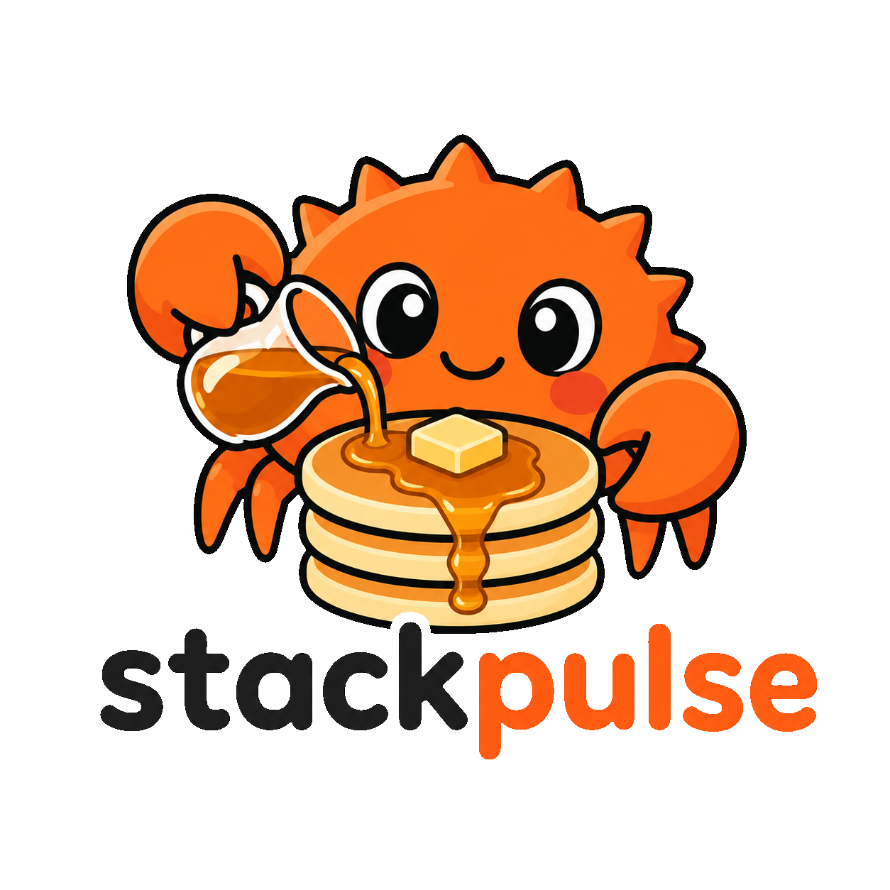

API
Record and resolve a profile
Follow an end-to-end example and find the core types for recording and symbolization.
Rust library for profiler authors
StackPulse records stack samples and resolves them into frames for your profiler.

Documentation
The API overview explains integration. The guide covers capture configuration and diagnostics.
API
Follow an end-to-end example and find the core types for recording and symbolization.
Guide
Use the guide for startup capture, child processes, symbol lookup, and lost samples.